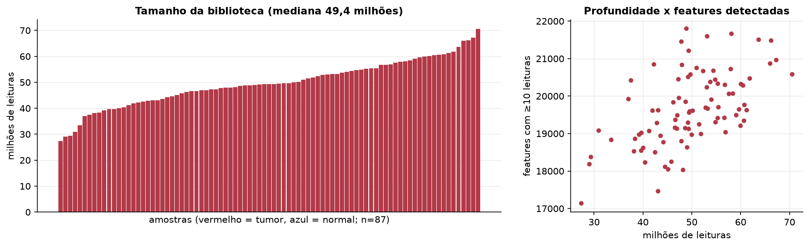
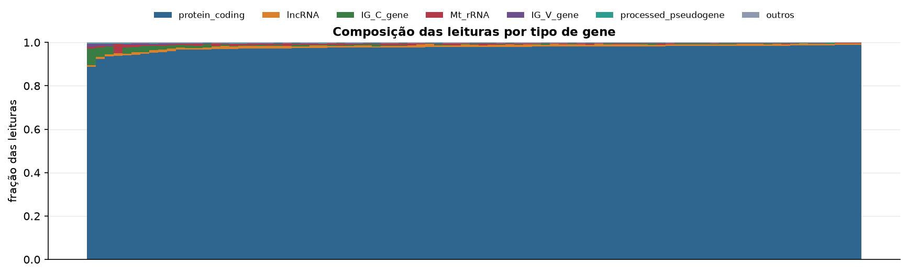
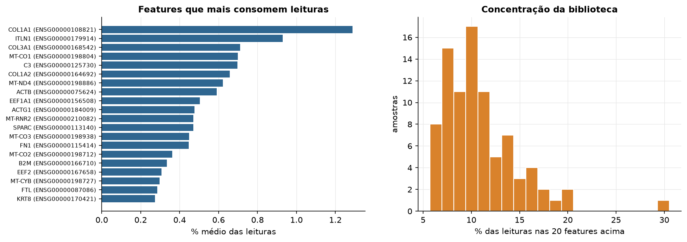
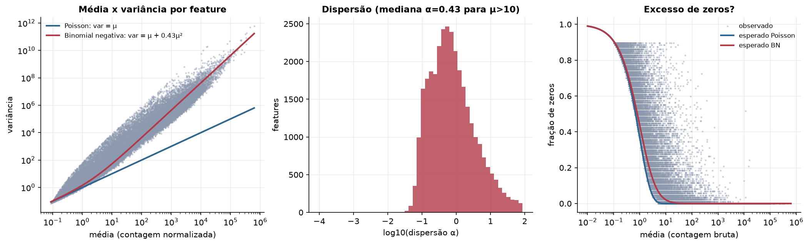
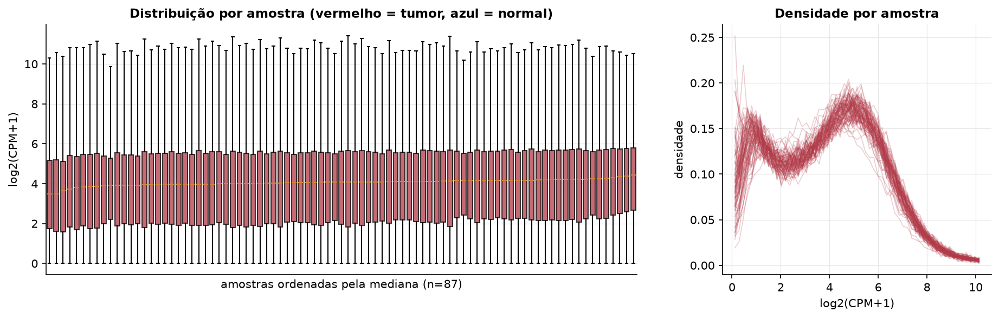
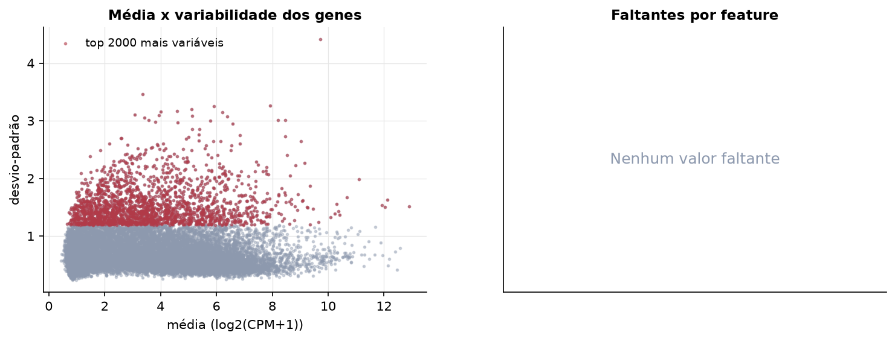
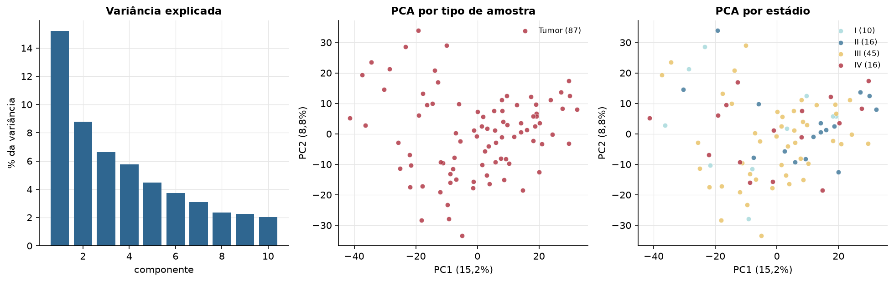
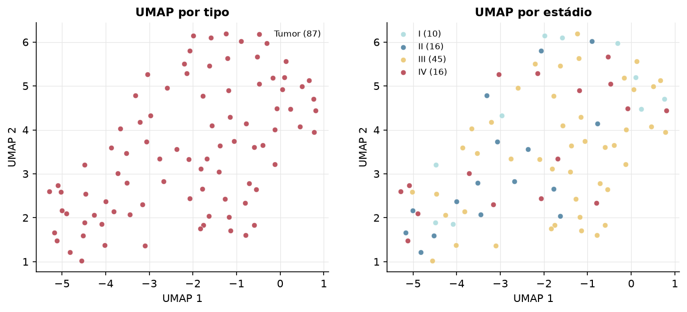
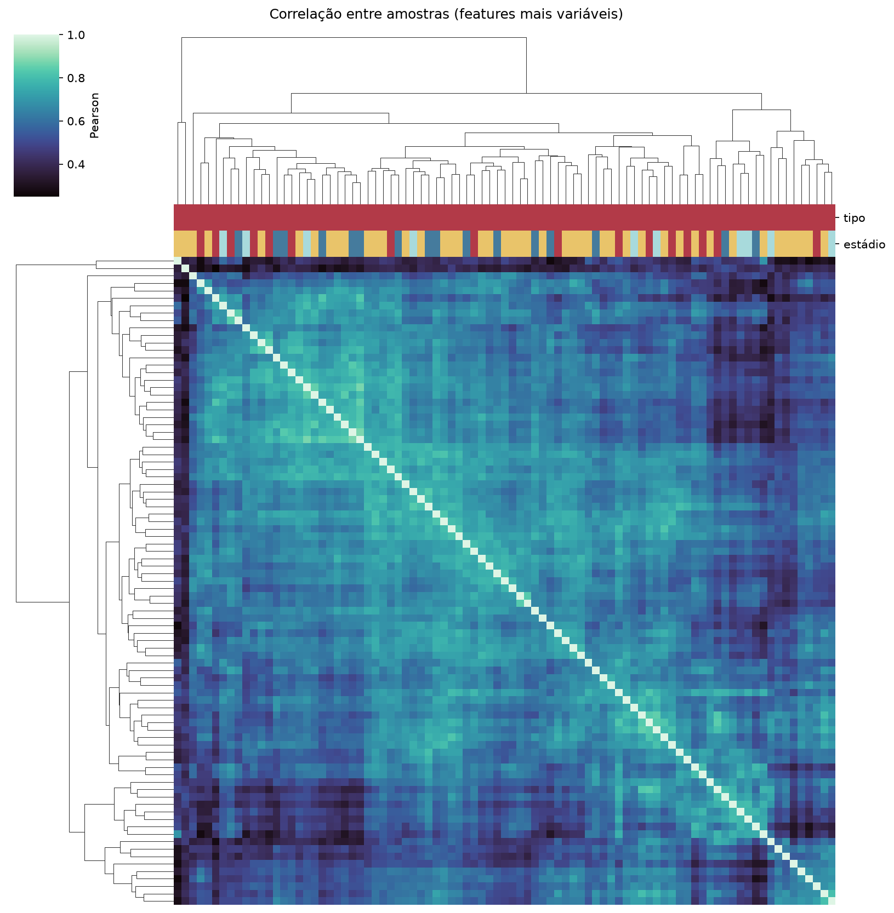
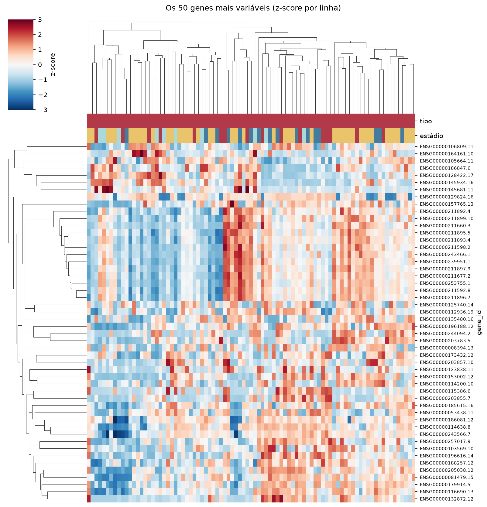

MESO · RNA-seq: contagens brutas (GDC)
STAR - Counts (GENCODE v36) · gerado em 22/10/2026 02:00
49,4 Mtamanho mediano
0,43dispersão mediana α
16.694genes
87amostras tumorais
0amostras normais
0,0%valores faltantes
Fonte: API do GDC (STAR - Counts)
Principais resultados
- Bibliotecas de 27,4 a 70,5 milhões de leituras (mediana 49,4). 42.380 de 60.660 features têm leitura em pelo menos 10% das amostras.
- A variância cresce bem acima da média: a dispersão mediana da binomial negativa é α=0.43 (para features com média > 10). Isso descarta um modelo Poisson e indica binomial negativa (ou Poisson-lognormal) na verossimilhança.
- A fração de zeros é compatível com a binomial negativa (diferença mediana -0,2%); inflação de zeros não parece necessária.
- Em média 9,9% das leituras de cada amostra vão para as 20 features mais abundantes (COL1A1, ITLN1, COL3A1).
- Genes codificadores de proteína recebem 97,9% das leituras (mediana).
- 16.694 genes medidos em 87 amostras (87 tumorais e 0 normais); 0,0% dos valores estão faltando.
- Os dois primeiros componentes principais explicam 15,2% e 8,8% da variância das features mais variáveis.
- Correlação mediana entre amostras: 0,62.
- Amostras com correlação muito abaixo das demais (possíveis outliers técnicos): TCGA-LK-A4O4-01, TCGA-SH-A7BH-01.
- Há menos de 3 amostras normais, então a comparação tumor x normal não foi feita.
- Associações clínicas com p < 0,05 nos componentes principais: PC1 com sobrevida (p=3.9e-06).
Biblioteca



Sobredispersão e zeros

Exploração em log2(CPM+1)
Features com CPM ≥ 1 em pelo menos 20% das amostras (16.694 features).
Distribuição dos valores


Estrutura das amostras




Associação com variáveis clínicas
p-valores da associação dos três primeiros componentes principais (só tumores) com estádio (Kruskal-Wallis), sexo (Mann-Whitney), idade (Spearman) e sobrevida global (Cox univariado).
| estádio (Kruskal) | sexo (Mann-Whitney) | idade (Spearman) | sobrevida OS (Cox) | |
|---|---|---|---|---|
| PC1 (15,2%) | 0.11 | 0.588 | 0.189 | 3.85e-06 |
| PC2 (8,8%) | 0.348 | 0.738 | 0.63 | 0.283 |
| PC3 (6,6%) | 0.297 | 0.641 | 0.878 | 0.127 |